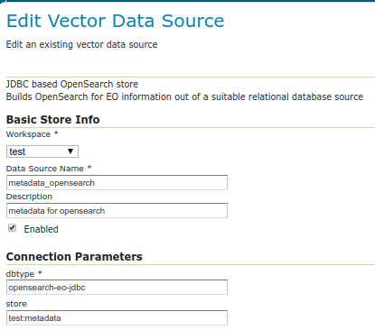

Configuring the OpenSearch module¶
The OpenSearch module needs to know upon which database perform the searches.
Follow these steps:
Setup a standard PostGIS database pointing to the database and schema created above from the SQL file. Note down the full name of the store (e.g.
test:metadatawheretestis the workspace andmetadatais the store name). Besides filling the connection parameters, remember to set “expose primary keys” to true.Create a new store of type “JDBC based OpenSearch store” and configure the fully qualified name of the basic PostGIS store in its “store” parameter.
Go into the “OS-EO” service configuration page and configure the “OpenSearch” store

Advanced: adding product classes¶
The design of the OpenSearch module is “data driven”, meaning that one can materialize new search properties by just adding new columns to the product and collection tables.
In particular, both tables have a “prefix based” convention linking the properties to their respective product types, and the engine will advertise for a particular product only the properties relevant to it. For example, in an optical product, the properties starting with “opt” will be listed, but not those starting with “sar”.
Here is a table of the product classes known out of the box:
Name |
Prefix |
Namespace |
Description |
|---|---|---|---|
eop_generic |
eop |
Base properties shared among all EO products. Never remove this class. |
|
optical |
opt |
Optical products properties |
|
radar |
sar |
Radar products properties |
|
Altimetric |
alt |
Altimetric products properties |
|
Atmospheric |
atm |
Atmospheric products properties |
|
Limb |
lmb |
Limb products properties |
|
ssp |
ssp |
SSP products properties |
The various properties have different usages:
The name is used in the collection to define the type of sensor (eoSensorType column)
The prefix is used in the product table as a prefix to column name in order to associate them to a particular product type, shows up as-is in the JSON representations of the REST API, as well as the prefix in XML outputs
The namespace is used in XML output, along with the prefix (e.g.,
xmlns:opt="http://www.opengis.net/opt/2.1")
It is possible to add new product classes as well as changing the build-in ones, but care should be taken to keep product classes and database aligned. After any change to the database structure remember to “reset” the GeoServer configuration to make it re-scan the table structures.